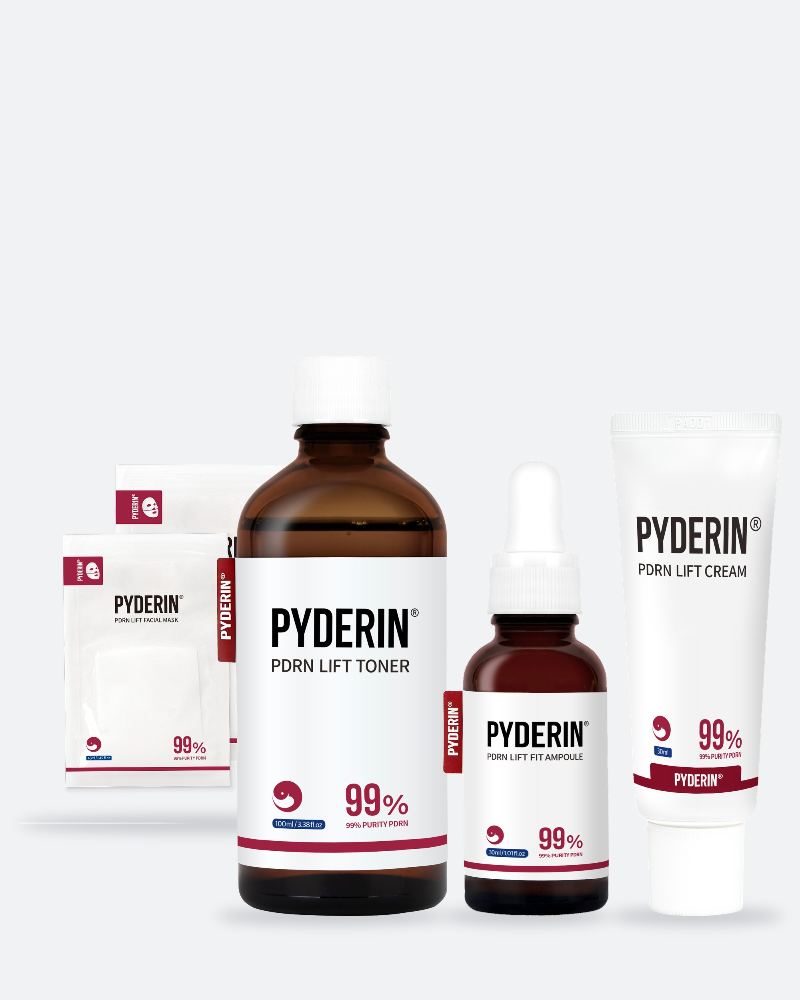

For elasticity and firmness. Four steps, built around 99% pure PDRN.1
For all skin types concerned with loss of firmness. Skin irritation index 0.00.2
¹ 99% pure PDRN refers to the purity of Derbiome® PDRN 10K Sodium DNA. ² PDRN Lift Toner test report.
What goes into each step, and how to use it.
99% pure PDRN 2,000ppm · 280 Dalton low molecular collagen · Acetyl Hexapeptide-8
After cleansing, apply an appropriate amount onto a cotton pad or your hands and gently absorb into the skin following its texture.
99% pure PDRN 2,000ppm · 300 Dalton low molecular collagen · 9 types of firming peptides · 98% pure spicules
Shake the ampoule well before use. Apply an appropriate amount to the skin, then press and rub gently with your fingertips to aid absorption.
99% pure PDRN 20,000ppm · Panthenol 20,000ppm · Super Centella 10,000ppm
Take an appropriate amount and apply generously to the skin, allowing it to absorb fully.
99% pure PDRN 2,000ppm · 5-layer moisture blanket sheet · 15 types of fermented probiotics
Apply the lower sheet around the mouth and nose, then the upper sheet around the eyes. Relax for 30 minutes, then remove.
a) Korea Dermatology Research Institute, 2024.10.08–2024.11.15, 21 adult women aged 44–65. b) Korea Dermatology Research Institute, 2024.12.04–2025.01.09, 22 adult women aged 42–66. Individual results may vary.
Wrinkle & firming lifting cream that tightens and lifts sagging skin.
For all skin types concerned with loss of elasticity and dryness.
Shop now